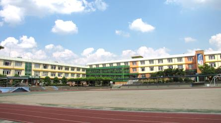

대구 서구는 중·고등학교가 평리·내당·비산 일대에 촘촘히 모여 있습니다. 대구제일고등학교·계성고등학교·경덕여자고등학교·대구서부고등학교 같은 고등학교와 경운중학교·평리중학교·중리중학교·대구청라중학교가 걸어서 닿는 거리에 있습니다. 학교는 가깝지만 학원 시간표는 학생 사정에 맞춰 주지 않아서, 저녁이 이동과 대기로 묶이는 학생은 집으로 오는 1:1 중등 수학과외나 고등 국어과외를 따로 찾게 됩니다.
오늘은 대구 서구로 직접 찾아가는 선생님들 가운데 맡는 과목과 방문 동네가 다른 두 분을 소개합니다. 한 분은 수학과 과학을 초등부터 고3까지 보는 선생님, 한 분은 국어와 영어를 초등부터 고3까지 보는 선생님입니다.
서구에서 중등 수학과외 상담이 들어오는 시점은 대개 진도가 아니라 구멍입니다. 지금 단원이 막히는 이유가 한두 학기 전에 있는 경우입니다. 이 선생님의 수업에서 눈에 띄는 대목은 마지막 단계입니다. 배운 내용을 학생이 선생님에게 다시 설명하게 합니다. 설명이 막히는 자리가 곧 이해하지 못한 자리라, 구멍을 찾는 데 시간이 덜 듭니다.
수학은 초3부터 고3까지, 과학은 중1부터 고3까지 봅니다. 중학교에서 시작해 고등까지 선생님을 바꾸지 않아도 되고, 수학과 과학이 겹치는 구간에서는 한 사람이 맡는 편이 설명이 빠릅니다. 방문 동네는 서구 남산동·내당동 쪽과 중구·달서구이며, 화상 수업도 됩니다.
박ㅇ운 선생님 상세 프로필 →서구에서 고등 국어과외를 따로 찾는 이유는 대개 한 가지입니다. 지문은 이해했는데 선지 두 개에서 갈리기 때문입니다. 이 선생님의 수업에는 그 지점을 겨냥한 장치가 있습니다. 틀린 이유와 정답의 근거를 학생이 직접 찾게 합니다. 해설을 들으면 그 문제만 해결되지만, 근거를 직접 짚으면 같은 유형이 다시 나왔을 때 반반으로 돌아가지 않습니다.
국어와 영어를 한 사람이 초1부터 고3까지 봅니다. 서술형 대비를 수업 안에 넣어 두고, 수업 리포트와 상담으로 진행 상황을 공유합니다. 진로 교육 강사로 일한 이력이 있어 학습 습관과 동기 쪽까지 같이 봅니다. 방문 동네는 서구 비산동·원대동 쪽과 북구이며, 화상 수업과 검정고시 준비도 가능합니다.
송ㅇ 선생님 상세 프로필 →학교마다 진도와 시험 범위가 달라서, 학교별로 준비법을 따로 정리해 두었습니다.
👉 서구 수학과외 선생님 · 서구 국어과외 선생님 · 서구 관리 학교 전체 보기